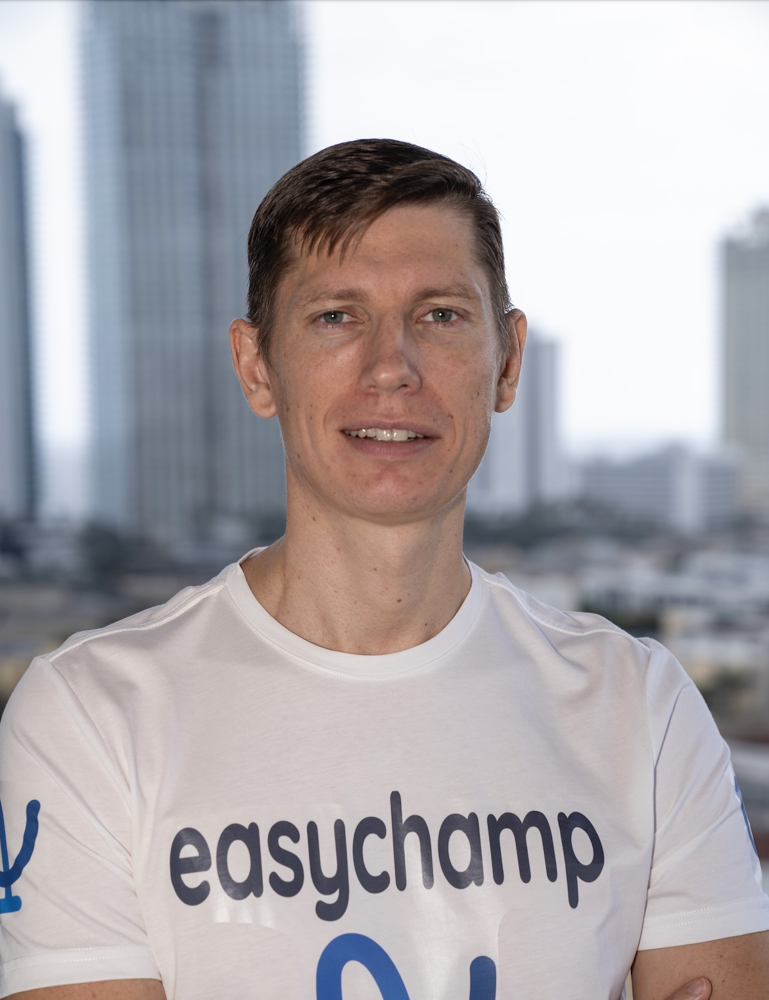
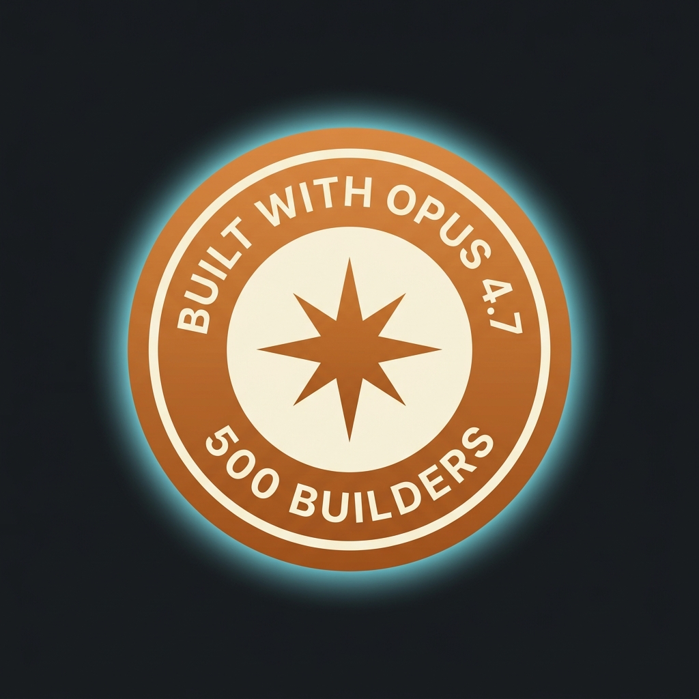
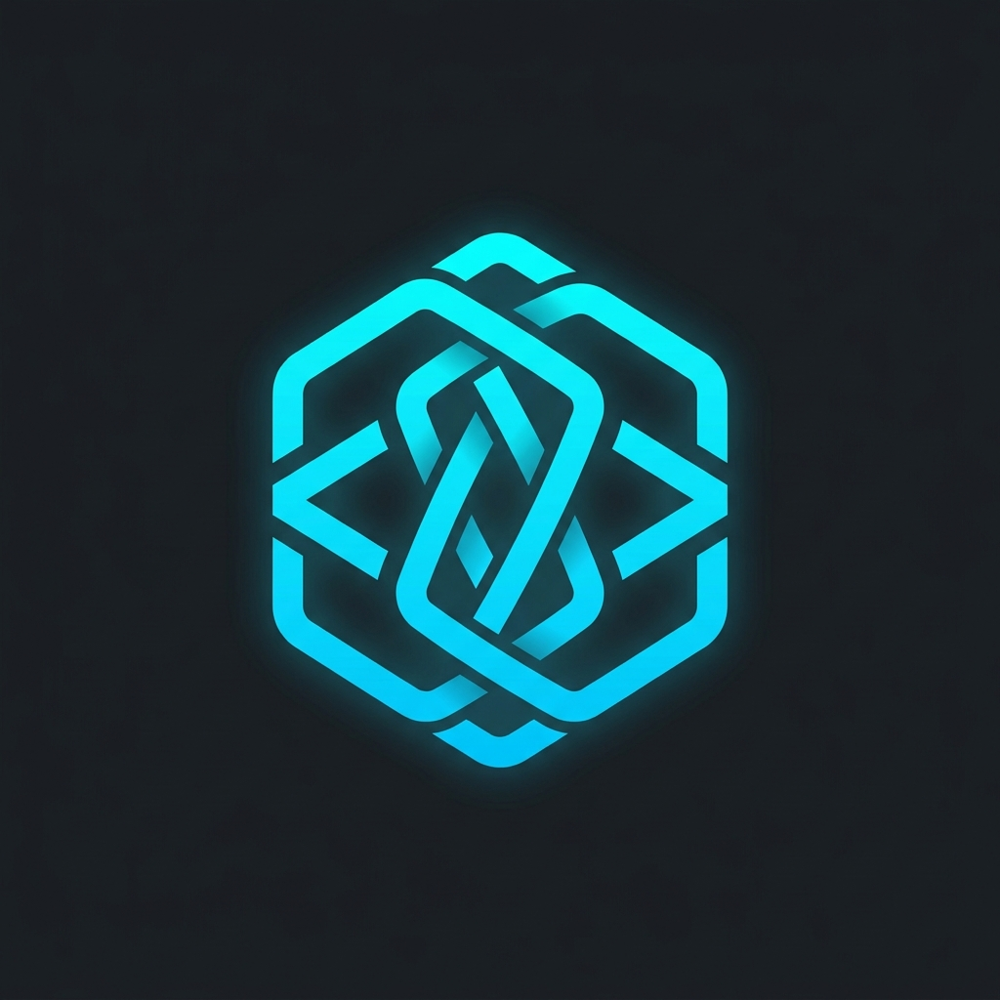
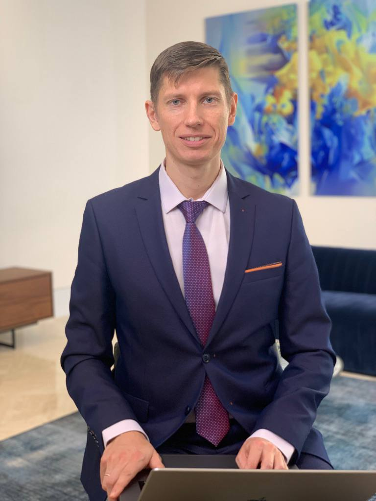

Cloud Architecture
Azure, AWS, GCP Multi-cloud Expert
Stratum 00 — Surface
Platform Technology Lead
Technology Evangelist & Digital Transformation Pioneer driving enterprise innovation through cloud-native architectures, AI/ML, and open-source developer tooling. Forbes Technology Council / IEEE Senior Member / Selected for Anthropic's Built with Opus 4.7 Hackathon — 1 of 500 builders chosen from 22K+ applications (top ~2%) / Creator of SpecWeave & verified-skill.com / US EB-1A Extraordinary Ability

Stratum 01
Two decades of sediment: enterprise platforms, open-source tooling, and the recognition layered on top.
Azure, AWS, GCP Multi-cloud Expert
Claude Code, Opus 4.7, MCP, LangChain, Vector DBs
.NET 9, React, TypeScript, Python
Kubernetes, GitOps, CI/CD, IaC
Stratum 02
Each era settles over the one before it. Scroll to dig down through the record.
Leading 25+ engineers architecting clinical data platform and AI/ML infrastructure for global medical device analytics.
Building AI-powered sports competition management platform with cutting-edge computer vision and cloud-native architecture.
Led platform modernization serving 20M+ passengers annually, migrating 5PB data warehouse to cloud.
Stratum 03
The deposits that hardened: selection, shipped open source, and public recognition.

Selected as 1 of 500 builders from 22K+ applications (top ~2%) for Anthropic & Cerebral Valley's flagship Claude Code hackathon (Apr 21–28, 2026). Submitted Skill Studio — a web UI for evaluating and iterating on Claude Code Agent Skills.
Watch 3-min Demo →
Creator & maintainer of the open-source spec-driven development framework for Claude Code. Plans features, generates specs, and syncs increments bidirectionally with GitHub, JIRA, and Azure DevOps. Distributed as 100+ sw:* Agent Skills.
Founder of the trusted registry & security scanner for AI agent skills. 52 scan patterns across 39 platform adapters detect malicious prompts, exfiltration, and over-privileged tools in SKILL.md files. Distributed on npm.
Invitation-only membership for senior technology executives. Published thought leader on digital transformation and sports-tech innovation.
View Forbes Profile →Participated in AI hackathon with Clement Delangue (CEO) — our innovative solution received notable recognition.
View Photo →Recognized for innovation and digital transformation across enterprise platforms.
View Award →Stratum 04
Peer-reviewed papers, council essays and technical writing from 2015 onward.
Forbes Technology Council, 2023
Read Article →Forbes Technology Council, 2023
Read Article →APNI.ru Scientific Publication, 2023
Read Paper →Инновации и инвестиции, 2023
Read Paper →IJLEMR, Volume 8, 2023
Read Paper →Habr Technical Blog, 2015
Read Article →Stratum 05
The bedrock layer — sport, music and endurance. Every card opens a real gallery.
Stratum 06
Ready to evangelize your next digital transformation?
